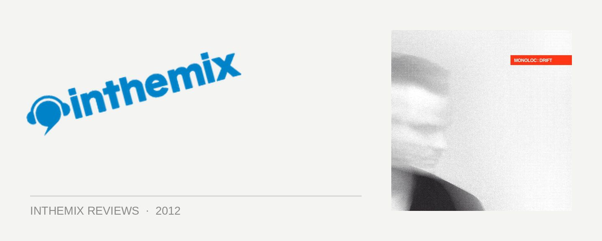

Monoloc - Drift
The consistency of the CLR label’s brass-knuckle heaviness means that largely, you know what you’re going to get; the kind of titanium-strength, throbbing industrialism you’d hear in a set from label head Chris Liebing, one of the true heavies of hard techno, once described to me by a veteran raver as, ” the only DJ to ever truly wear me out on the dancefloor”.
CLR recently hosted an album from acclaimed live duo Motor, as well as last year’s militantly industrial debut from Tommy Four Seven; however, the label’s latest LP is a real milestone. Like Liebing himself, Monoloc aka Sascha Borchardt hails from the techno hub of Frankfurt in Germany’s south-west. After more than a decade of tinkering in the studio, and a steady stream of releases since 2008, Borchardt attempted to step things up on his debut LP – ushering the label’s signature, thundering sound into a more intimate setting. If this notion sounds paradoxical to the core, it only makes what he’s achieved on Drift even more impressive.
The Monoloc musical vision was typically expressed through dark, pitched-down techno, which was still buffed and polished for the dancefloor. On his debut LP though, he spent over a year in the studio, crafting an altogether new musical direction, which Liebing himself took an active part in helping bring to fruition. For a producer who’s a rookie in terms of tackling the intimidating album format, Borchardt’s sounds are mesmerisingly cohesive, and in terms of broadening the CLR palette, whilst maintaining the consistency, it’s mission accomplished.
Drift opens onto a crackling, scorched soundscape that’s already been flattened by nuclear fire; hissing with static, it slowly shudders to life, and it’s the darkest of techno, though only with the pulsing 4/4 drone removed. Borchardt uses this as a foundation to build upon, patiently introducing the different elements, and gradually working a jagged melody into the frame.
Try follows, and introduces a heavy main room kick, dropped into the track via a series of thuds, ratcheting the tension to the point where it feels like being dragged through the coals. Similar to what Australian producer Deepchild artfully practised on Neukölln Burning this year, Borchardt enjoys sampling a soulful vocal, and thoroughly re-appropriating it for a much darker setting; the sampled croon here is transformed into something much more like an anguished cry.
It’s Mine is where Borchardt takes another step into the unknown, utilising the melodic vocals of Daniel Wilde for a menacing Trent Reznor style refrain, which he bounces off a crisp 4/4 groove that’s finally introduced into the canvas. “A feeling in my bones, says I have to own you/ not much you can do, I will control you.” Wilde makes another two appearances on Drift, and his different shades of darkness and melody contrast nicely. You’ll rarely hear vocals punctuate an industrial techno track, so it’s a brave move for Borchardt to dare for this kind of melodrama.
Things pushes the menace even further; the dropping bass kick returns with an ominous repeated thud, trapping the listener perpetually in the wrath of a hard techno breakdown, while rumbling stabs intermittently puncture the soundscape, resulting in even more unease. Elsewhere, the mutant soul of PBLC is as ‘light’ as Drift gets; another innocuous vocal sample is mercilessly hurled into Borchardt’s machines, the bluesy croon emerging twisted and charred, robotically placed on an endless loop. “Everybody knows, that a man ain’t supposed to cry…”
Meanwhile, Daniel Wilde returns for the album’s closer, channeling the tortured emotions of Depeche Mode’s Dave Gahan. Beatifully done, though the focus here is as much the percussion, taking on a life of its own as it builds to a crescendo; before Borchardt yanks things to a halt as the static flickers out.
Drift is both harsh and gorgeous, emotionally exhausting and melodically enticing; while it’s far from an “easy listen”, paradoxically, Borchardt’s painstaking work in the studio means it’s easy to listen to. He successfully explores new ways of building tension, often without the use of a 4/4 kick, and his sonic adventures have as much in common with the throbbing industrial of Skinny Puppy or the darkest hours of Nine Inch Nails, as it does hard techno. Importantly for CLR, it beckons the label’s notoriously steely sound into a more intimate, moody setting – without sacrificing any of the consistency, integrity, hypnotic pull or white-knuckle intensity.
Monoloc’s Drift is out now on CLR.